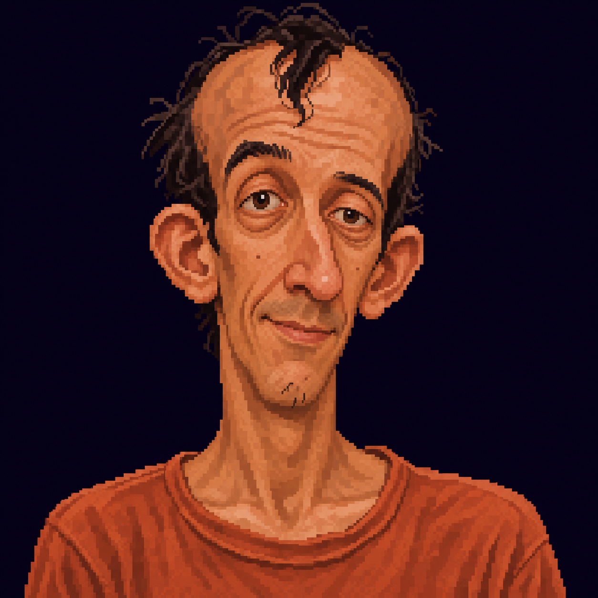
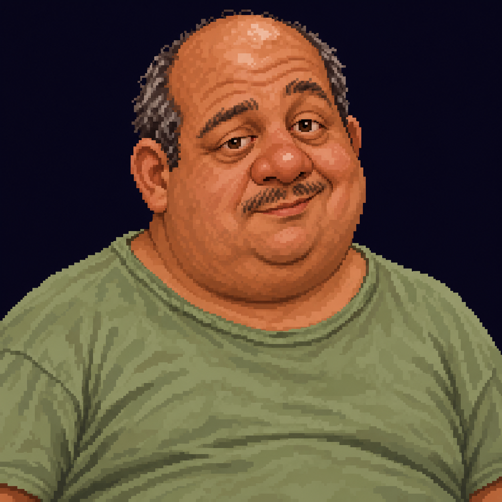
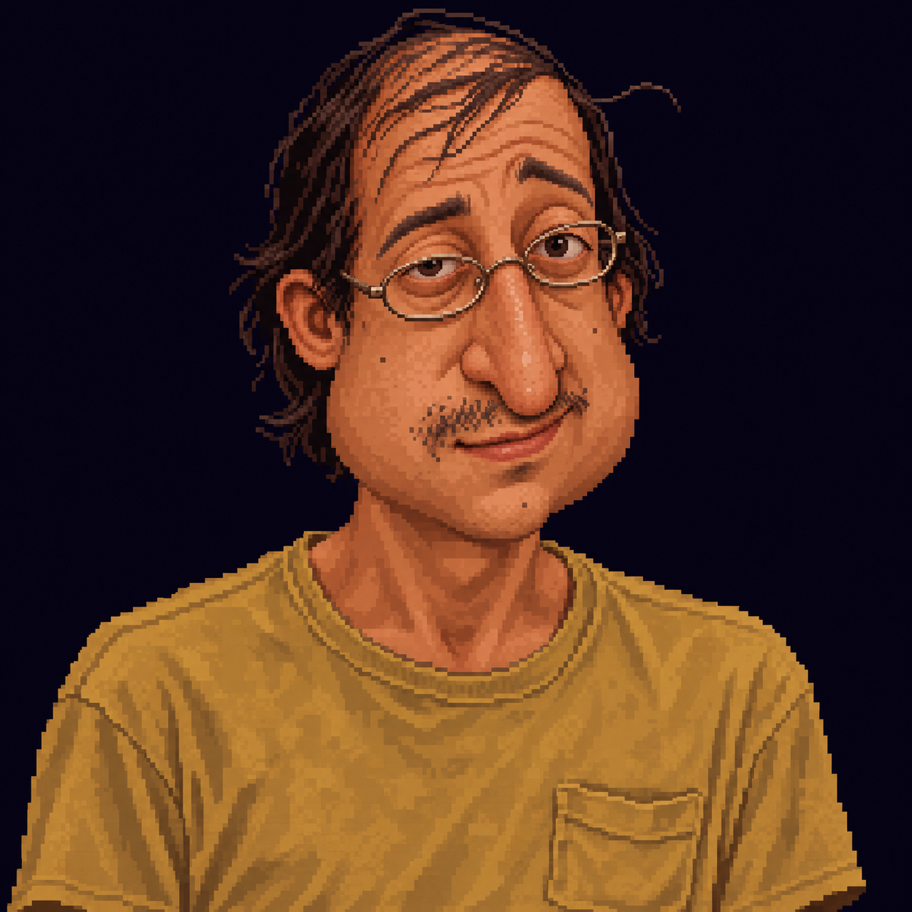
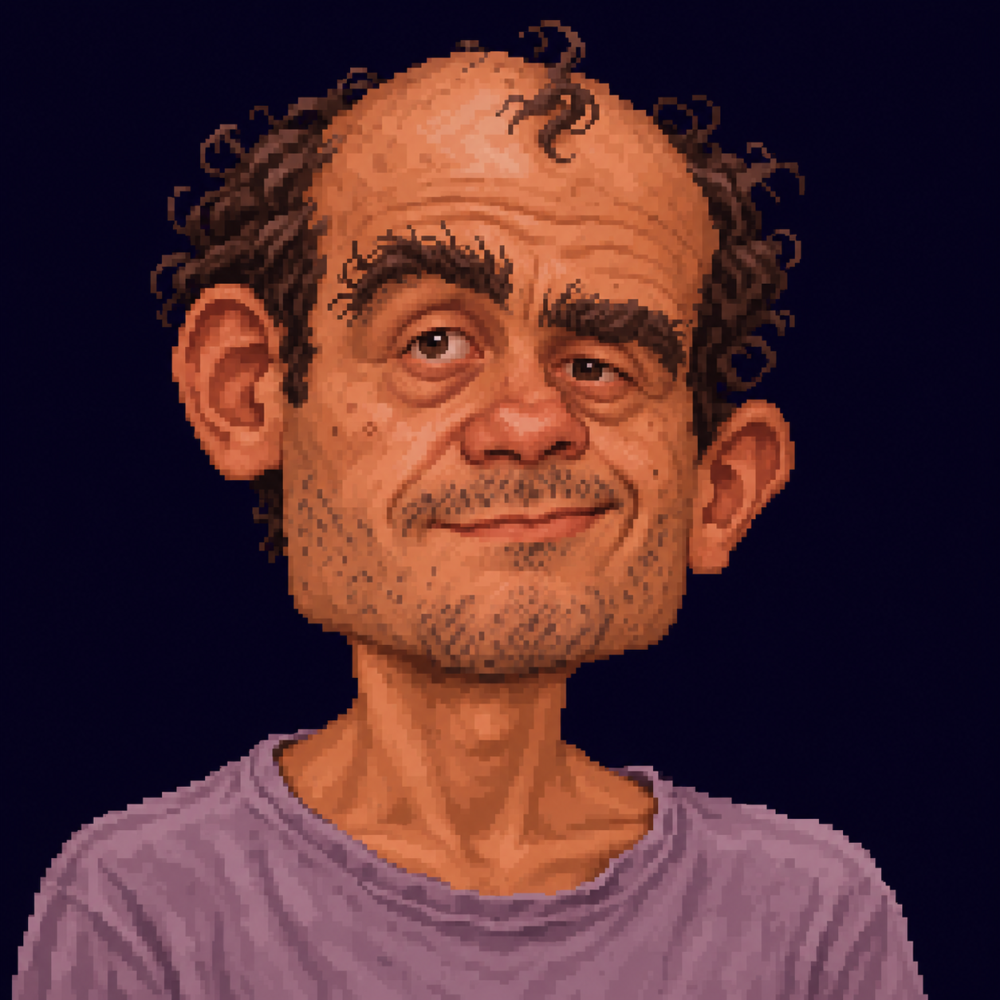

Grandes oreilles, petit menton, mèche solitaire.

Crâne dégarni, petits yeux inégaux, moustache fine.

Long nez, cheveux fins, lunettes de travers.

Grosse tête, cou maigre, sourcils broussailleux.
Quatre personnes différentes, détendues, singulières, en t-shirt.



